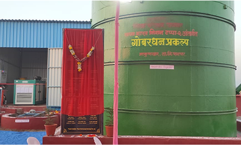
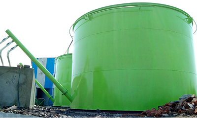
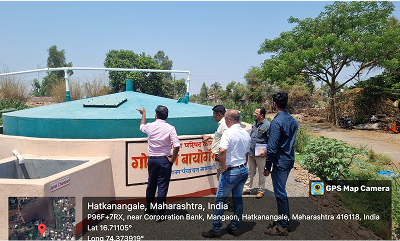
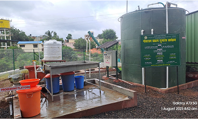

The Need for Biogas in India
India is grappling with significant challenges in waste management and
energy security. With a growing population and increasing
industrialization, the country generates an enormous amount of organic
waste. Biogas technology offers an effective solution by converting
organic waste into a renewable source of energy. This not only helps
in managing waste sustainably but also provides a cleaner alternative
to traditional fossil fuels. The Government of India, recognizing the
potential of biogas, supports its adoption through various incentives
and subsidies, promoting a greener and more sustainable future.


Urging Indian Businesses to Adopt Biogas Solutions
-
Efficient Waste Management :
Biogas plants process organic waste, reducing the burden on landfills and mitigating environmental pollution. This is crucial for both urban and rural areas struggling with waste disposal issues.
-
Renewable Energy Generation :
Biogas is a sustainable and renewable energy source that can significantly reduce reliance on non-renewable fossil fuels, thus contributing to energy security and independence.
-
Environmental Protection :
Biogas plants capture methane emissions from decomposing organic matter, converting them into energy. This process reduces greenhouse gas emissions and helps combat climate change.
-
Economic Benefits :
Investing in biogas projects can lead to cost savings in waste management and energy procurement. Additionally, these projects create job opportunities and generate income from the sale of biogas and bio-fertilizers.
-
Agricultural Sustainability :
The by-product of biogas production, known as digestate, is a high-quality organic fertilizer. It enhances soil fertility and supports sustainable agricultural practices


Our Expertise as a Biogas Manufacturer
As an experienced biogas manufacturer, we provide comprehensive and
tailored solutions for various sectors. We specialize in :
-
TIn-Vessel Metallized Digesters :
Our advanced in-vessel digesters offer a compact, efficient solution for controlled anaerobic digestion with high methane yields. These systems are ideal for urban settings, food processing units, and institutions.
-
Civil-Constructed Biogas Plants :
For larger-scale applications, our civil-constructed plants provide robust, scalable solutions suitable for agricultural operations, industrial applications, and large communities.
-
Compressed Biogas (CBG) Projects :
We also specialize in larger Compressed Biogas (CBG) projects, which upgrade biogas to bio-CNG standards. These projects can significantly impact energy sustainability, offering a cleaner alternative to conventional fuels for transportation and industrial use.
Our comprehensive services include feasibility studies, design,
installation, operation, and maintenance. We are committed to
delivering high-quality biogas solutions that meet international
standards and ensure optimal performance and reliability.
Get Involved
Contact us today to explore how our biogas installation projects can
help your business achieve its sustainability goals, manage waste
efficiently, and contribute to a cleaner, greener India. Let’s work
together to harness the power of biogas and drive a sustainable energy
revolution.